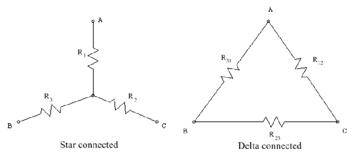

Star or Y(wye) to Delta(Δ ) Conversion permits the replacement of a star connected network to a delta one. Figure below shows three resistors R1, R2 and R3 connected in star fashion and resistors R12, R23 and R31 connected in a delta fashion between the terminals A,B and C.

Now from the delta network in the figure, it can be seen that the resistance between the terminals A and C consists of R12 in parallel with (R23 + R31).
Hence, the equivalent resistance between the terminals A and C = R12 × ( R23 + R31 ) / R12 + R23 + R31. Also, from the star network in shown in the figure, the resistance between the terminals A and C is the series combination of R1 and R2 . Hence the equivalent resistance between the terminals A and C = R1 + R2
Now for these two arrangements to be equivalent to each other, the resistance between any pair of terminals(Consider A and C in this case) must be equal. R1 + R2 = ( R12 × ( R23 + R31 ) ) / ( R12 + R23 + R31 ) ...(i) Similarly, Equations for other two terminals can be written using the same consept as : R3 + R1 = ( R31 × ( R12 + R23 ) ) / ( R12 + R23 + R31 ) ...(ii) Now, Subtracting equation (iii) from (i), R1 - R3 = ( R12 ( R23 + R31 ) - R23 × ( R31 + R12 ) ) / ( R12 + R23 + R31 ) Now, Adding eq (ii) and (iv), 2 × R1 = ( ( R31 × R12 ) + ( R31 × R23 ) + ( R31 × R12 ) - ( R31 × R23 ) ) / ( R12 + R23 + R31 ) R1 = ( R12 × R31 ) / ( R12 + R23 + R31 ) Similarly, R2 = ( R12 × R23 ) / ( R12 + R23 + R31 ) Now, Multiplying above values of R1 by R2, R2 by R3 and R3 by R1, R1 × R2 = (R12 × R12 × R23 × R31) / ( ( R12 + R23 + R31 ) × 2) ...(v) Now,Adding these 3 equations (v, vi and vii), ( R1 × R2 ) + ( R2 × R3 ) + ( R3 × R1 ) = (R12 × R23 × R31) / ( R12 + R23 + R31 ) ... (viii) (one ( R12 + R23 + R31 ) bracket gets canceled from the numerator ) But from above derived equation of R3 we have, R3 = ( R31 × R23 ) / ( R12 + R23 + R31 ) Therefore equation (viii) becomes, ( R1 × R2 ) + ( R2 × R3 ) + ( R3 × R1 ) = R12 × R3 Similarly we can also say, The above equations (a), (b) and (c) represent the vaule of the equivalent delta resistance to be connected between two given delta terminals. In short, we can say that, the value of the delta resisitance which is to be connected between two given terminals is the sum of the two star resistances connected to those terminals plus the product of the same two star resistances divided by the third star resistance.
R2 + R3 = ( R23 × ( R31 + R12 ) ) / ( R12 + R23 + R31 ) ...(iii)
R1 - R3 = ( R12 × R31 - R23 × R31 ) / ( R12 + R23 + R31 ) ...(iv)
R3 = ( R31 × R23 ) / ( R12 + R23 + R31 )
R2 × R3 = (R12 × R23 × R23 × R31) / ( ( R12 + R23 + R31 ) × 2) ...(vi)
R3 × R1 = (R12 × R31 × R31 × R23 ) / ( ( R12 + R23 + R31 ) × 2) ...(vii)
R12 = (R1 × R2 + R2 × R3 + R3 × R1) / R3
or R12 = R1 + R2 + ( (R1 × R2) / R3) ) ...(a)
R23 = R2 + R3 + ( ( R2 × R3 ) / R1 ) ...(b)
R31 = R3 + R1 + ( ( R3 × R1 ) / R2 ) ...(c)
( e.g: R12 will be connected between A & C in the above figure )
 by
by {kind=link}